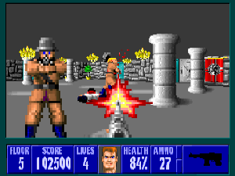

Bu derste oyunun haritası 🗺️
- Izgarada görüş hattı — örnekleme neden yanılır; DDA ile hücre hücre; Bresenham
- Işın dökümü — Wolfenstein 3D: 2B haritadan 3B görüntü; balık gözü
- Görüş alanı ve savaş sisi — roguelike’larda gölge dökümü; strateji oyunlarında üç durumlu sis
- Görüş çokgeni — sürekli dünyada “gördüğüm her yer”; yalnızca köşelere ışın; 2B ışık ve gölge
- BSP ağacı — DOOM duvarları sıralamadan nasıl önden arkaya çizdi?
- Her adımda — elle izleme → canlı demo → kod (JavaScript / Python / C#) → oyunlardaki karşılığı
“şu hücreden bu hücre görünüyor mu?”, “oyuncu şu an haritanın neresini görüyor?” ve “hangi duvar önde?” sorularını cevaplayan algoritmaları yazabilecek; Wolfenstein 3D’nin görüntüsünü ve DOOM’un çizim sırasını kod düzeyinde açıklayabileceksiniz.
Wolfenstein 3D, saniyede milyonlarca işlem bile yapamayan bilgisayarlarda akıcı bir “3B” koridor oyunuydu. Haritası ise kareli deftere çizilmiş gibi düz bir ızgaraydı. Nasıl?
- Oyun 3B hesap yapmıyordu. Ekranın her sütunu için tek bir soru soruyordu: “bu yönde ilk duvar ne kadar uzakta?”
- Uzaklık küçükse o sütuna uzun bir çubuk, büyükse kısa bir çubuk çiziyordu. 320 sütun, 320 soru.
- Aynı soru bugün her yerde: muhafız beni görüyor mu (Y11), fener nereyi aydınlatıyor, haritanın hangi kısmı sisli, mermi neye çarptı.
- Bu sunum “buradan ne görünüyor?” sorusunun dört cevabı: bir hücreye, bir sütuna, bütün çevreye ve bütün sahneye.
🎯 Bu konu için bilmeniz gerekenler
Yeşil = gerekli · kesikli = faydalı ama şart değil. Tıklayınca ilgili sunuma gider.
Mini sözlük
| line of sight (LOS) | görüş hattı | İki nokta arasında engel olup olmadığı |
| DDA · Bresenham | — · — | Bir ışının geçtiği bütün ızgara hücrelerini sırayla gezme · ızgarada ince çizgi çizme |
| raycasting | ışın dökümü | Her ekran sütunu için bir ışın gönderip duvar uzaklığından görüntü kurma |
| field of view (FOV) | görüş alanı | Bir noktadan görülebilen bütün hücreler/bölge |
| shadowcasting | gölge dökümü | Engellerin arkasındaki açı aralıklarını “gölge” sayarak görüş alanı bulma |
| fog of war | savaş sisi | Haritanın görülmeyen / hatırlanan / görünen kısımlarının ayrımı |
| visibility polygon | görüş çokgeni | Sürekli dünyada bir noktadan görülen bölgenin sınırı |
| BSP tree | ikili uzay bölme ağacı | Uzayı duvar doğrularıyla ikiye bölerek kurulan ağaç; çizim sırası verir |
| PVS · occlusion culling | olası görünür küme · kapatma ayıklaması | Önceden hesaplanmış “buradan görünebilenler” · görünmeyeni çizmeme |
Problem: arada duvar var mı?
- Gizlilik: muhafız oyuncuyu görüyor mu? (Y11, Y19)
- Taktik / sıra tabanlı: bu asker şu düşmana ateş edebilir mi?
- Roguelike: canavar beni fark etti mi?
- Kule savunma: kule hedefi görüyor mu?
- Hepsi: iki hücre arasındaki doğru üzerinde duvar hücresi var mı?
Gözden hedefe giden doğru üzerinde her yarım hücrede bir nokta al; noktanın düştüğü hücre duvar mı?
- Adım büyükse: ışın bir duvarın köşesinden atlar; gözcü duvarın arkasını görür.
- Adım küçükse: aynı hücreye 5–10 kez bakılır; yüzlerce NPC × her kare.
- “Doğru” adım boyu yok: ne kadar küçültürseniz küçültün, yeterince ince bir köşe kaçar.
Bu dersin Y19’daki gizlilik oyununun ilk sürümü de böyle yazılmıştı (6 piksellik adımlar).
Çizimle: ışın ızgarada hangi hücrelerden geçer?
Işın bir hücreden çıkarken ya bir dikey ya bir yatay çizgiyi keser. Hangisi daha yakınsa o geçilir ve komşu hücreye girilir. Sonraki slayt aynı altı hücreyi tabloyla, sayılarla izliyor.
Fikir: DDA — hücre sınırlarını sırayla geç
- Işın bir hücreden çıkarken ya bir dikey çizgiyi ya bir yatay çizgiyi keser. Hangisi daha yakınsa onu geçer ve komşu hücreye girer.
- İki sayı tutulur: tMaxX = sıradaki dikey çizgiye kadar kalan yol; tMaxY = sıradaki yatay çizgiye kadar kalan yol.
- Her adımda küçük olanı seç; o yönde bir hücre ilerle; o sayıya sabit bir miktar (tDelta: bir hücre genişliğini geçme süresi) ekle.
- Işın, değdiği her hücreyi tam bir kez ve sırayla ziyaret eder. Atlama yok, tekrar yok.
Adı “digital differential analyzer”; bu sürümü Amanatides ve Woo 1987’de ışın izleme için yayımladı.
Yön (3, 2) → birim: (0,832, 0,555). tDeltaX = 1/0,832 = 1,20; tDeltaY = 1/0,555 = 1,80.
| adım | tMaxX | tMaxY | küçük olan | girilen hücre |
|---|---|---|---|---|
| başlangıç | 0,60 | 0,90 | — | (0, 0) |
| 1 | 0,60 | 0,90 | X | (1, 0) |
| 2 | 1,80 | 0,90 | Y | (1, 1) |
| 3 | 1,80 | 2,70 | X | (2, 1) |
| 4 | 3,00 | 2,70 | Y | (2, 2) |
| 5 | 3,00 | 4,51 | X | (3, 2) hedef |
Altı hücre, beş karşılaştırma ve beş toplama. Çarpma ve bölme yalnızca kurulumda.
Canlı: örnekleme mi, DDA mı? 🔦
- Ekranı okuyun: yeşil gözcü (tıklayarak taşınır), mavi hedef (fareyi izler). Sarı kareler ışının baktığı hücreler; kırmızı kare ışını kesen duvar. Sol üstte sonuç, sağ üstte kaç hücre/örnek sınandığı.
- DDA: sarı hücrelerdeki numaralar ziyaret sırası. Işını çapraza çevirin: merdiven gibi, hiç boşluk bırakmadan ilerliyor.
- Örnekleme, adım 0,5: mor noktalar örnekler. Aynı hücreye iki-üç nokta düşüyor: boşa iş.
- Adımı 1,5 yapın ve hedefi duvarların köşelerinin hemen arkasında gezdirin: “HATA: görüyor dedi ama arada duvar var!” yazısını yakalayın.
- Aynı konumda yönteme DDA deyin: duvarı kaçırmıyor ve sınadığı hücre sayısı daha az.
- Ekranı okuyun: yeşil gözcü (tıklayarak taşınır), mavi hedef (fareyi izler). Sarı kareler ışının baktığı hücreler; kırmızı kare ışını kesen duvar. Sol üstte sonuç, sağ üstte kaç hücre/örnek sınandığı.
- DDA: sarı hücrelerdeki numaralar ziyaret sırası. Işını çapraza çevirin: merdiven gibi, hiç boşluk bırakmadan ilerliyor.
- Örnekleme, adım 0,5: mor noktalar örnekler. Aynı hücreye iki-üç nokta düşüyor: boşa iş.
- Adımı 1,5 yapın ve hedefi duvarların köşelerinin hemen arkasında gezdirin: “HATA: görüyor dedi ama arada duvar var!” yazısını yakalayın.
- Aynı konumda yönteme DDA deyin: duvarı kaçırmıyor ve sınadığı hücre sayısı daha az.
🔗 Başka gözle: etkileşimli anlatımlar ve yazılar
Aynı konuyu başka bir anlatımla, kendi elinizle oynayarak görmek çok işe yarar. Kartlar yeni sekmede açılır; çoğu İngilizce ama görsel ve etkileşimli.
Kod: ızgarada ışın ve görüş hattı
🎒 Kodu okuyalım
| ifade | ne demek | neden böyle |
|---|---|---|
Math.sign(dx) | −1, 0 ya da +1 | Hücre indisinin hangi yöne değişeceği. |
abs(1 / dx) | x’te 1 birim ilerlemek için gereken t | dx = 0 ise sonuç Infinity: dikey çizgi hiç kesilmez; karşılaştırmada kendiliğinden kaybeder. |
(cx + 1 - ox) / dx | sağdaki ilk dikey çizgiye kadar t | Sola gidiyorsak (dx < 0) çizgi cx’tedir: (cx - ox) / dx; pay ve payda eksi, sonuç artı. |
tMaxX < tMaxY | dikey çizgi daha yakın | Algoritmanın tek kararı. |
yan (0 ya da 1) | duvarın dikey yüzüne mi, yatay yüzüne mi çarptık? | Wolfenstein’da iki yüzü farklı tonla boyamak; çarpışmada normali bulmak için. |
Python: line_cells (Bresenham) | ince çizgi: yalnızca tam sayılar | Çapraz adım atabilir: (0,0)→(3,2) için 4 hücre (DDA 6). Köşeden sıyrılan ışını “geçti” sayar; hangisini istediğiniz bir tasarım kararı. |
🧪 Canlı laboratuvar: gözcü hedefi görüyor mu?
for (let i = 1; i < hucreler.length - 1; i++); her hücre için const [x, y] = hucreler[i]; ve grid[y][x] === 1 ise return false. Dikkat: önce y, sonra x (satır, sütun).🐍 Laboratuvar: ızgarada çizgi (Bresenham)
dx = abs(x1 - x0), dy = -abs(y1 - y0), err = dx + dy; döngüde hücreyi ekle, hedefe vardıysan çık, e2 = 2 * err; e2 >= dy ise x’te adım, e2 <= dx ise y’de adım. Bresenham bunu 1962’de bir çizici (plotter) için buldu; bugün hâlâ her roguelike’ın içinde.🎬 Ara: ızgarada süper hızlı ışın: DDA
Super Fast Ray Casting in Tiled Worlds using DDA
javidx9 (OneLoneCoder) · 30 dk 03 sn · YouTube’da aç
Az önceki DDA demosunun kodla, adım adım kurulumu: ışın her adımda bir sonraki dikey ya da yatay ızgara çizgisine atlar, hiçbir hücreyi kaçırmaz. Sonraki bölümdeki Wolfenstein ışın dökümünün temeli. İlk 15 dakika yeterli.
Çizimle: uzaktaki duvar neden küçük görünür?
Wolfenstein 3D’nin bütün “3 boyutu” tek bir bölme işlemidir: her ekran sütunu için duvara olan uzaklık bulunur ve o sütuna yükseklik = sabit / uzaklık boyunda bir çubuk çizilir.
Fikir: uzaklıktan yükseklik
- Harita 2B bir ızgara; oyuncunun bir konumu ve bir bakış açısı var.
- Ekran W sütun genişliğinde. Görüş açısını (ör. 60°) W eşit parçaya böl: her sütuna bir ışın açısı düşer.
- Her ışın için DDA ile ilk duvara uzaklığı bul (az önceki fonksiyon; t = uzaklık).
- O sütuna, ekranın ortasına hizalı, yüksekliği ekran yüksekliği / uzaklık olan bir çubuk çiz.
- Perspektifin tamamı bu bölme: iki kat uzaktaki duvar yarı boyda görünür.
| uzaklık | çubuk yüksekliği |
|---|---|
| 1 | 200 (ekranı doldurur) |
| 2 | 100 |
| 4 | 50 |
| 8 | 25 |
Düz bir duvara dik bakıyorsunuz; duvar 2 birim ötede. Ortadaki ışın 2 birim yol alır. 30° yandaki ışın aynı duvara 2 / cos 30° = 2,31 birimde ulaşır: daha “uzak” → çubuk daha kısa (86,6). Düz duvar bombeli görünür.
Düzeltme: uzaklığı bakış yönüne izdüşür: dik = uzaklık × cos(ışın açısı − bakış açısı). 2,31 × cos 30° = 2 ✔ → çubuk 100.
Canlı: iki boyuttan üç boyuta 🕹️
- Ekranı okuyun: solda harita ve oyuncu (yeşil); sarı çizgiler ekran sütunlarının ışınları (her beş sütunda biri çizili), kırmızı çizgi tam ortadaki ışın. Sağda aynı ışınlardan kurulan “3B” görüntü: 100 sütun = 100 ışın.
- W / S ile yürüyün, A / D ile dönün. Bir duvara yaklaşın: çubuklar uzar. Uzaklaşın: kısalır.
- Bir köşeye bakın: dikey ve yatay yüzler farklı tonda (koddaki
yandeğişkeni). Bu basit hile derinlik hissinin yarısı. - Düz bir duvara dik bakıp “balık gözü” kutusunu işaretleyin: duvarın üst ve alt kenarı kavislenir. Kutuyu kaldırın: düzelir.
- Görüş açısını 2 radyana çıkarın: geniş açı; kenarlarda gerilme. 0,5: dürbün. Oyunlardaki “FOV” ayarı bu sayıdır.
- Ekranı okuyun: solda harita ve oyuncu (yeşil); sarı çizgiler ekran sütunlarının ışınları (her beş sütunda biri çizili), kırmızı çizgi tam ortadaki ışın. Sağda aynı ışınlardan kurulan “3B” görüntü: 100 sütun = 100 ışın.
- W / S ile yürüyün, A / D ile dönün. Bir duvara yaklaşın: çubuklar uzar. Uzaklaşın: kısalır.
- Bir köşeye bakın: dikey ve yatay yüzler farklı tonda (koddaki
yandeğişkeni). Bu basit hile derinlik hissinin yarısı. - Düz bir duvara dik bakıp “balık gözü” kutusunu işaretleyin: duvarın üst ve alt kenarı kavislenir. Kutuyu kaldırın: düzelir.
- Görüş açısını 2 radyana çıkarın: geniş açı; kenarlarda gerilme. 0,5: dürbün. Oyunlardaki “FOV” ayarı bu sayıdır.
Kod: ışın dökümü
15 satır. isinAt bir önceki bölümün fonksiyonu: Wolfenstein’ın bütün “3B”si, ızgarada görüş hattının ekran sütunu sayısı kadar tekrarı.
🎒 Kodu okuyalım
| ifade | ne demek | neden böyle |
|---|---|---|
bakis - gorusAcisi / 2 + gorusAcisi * (sutun + 0.5) / width | en soldaki sütun: bakış − yarım açı; en sağdaki: bakış + yarım açı | + 0.5: ışın sütunun ortasından geçsin. |
v.t * cos(aci - bakis) | uzaklığın bakış yönündeki bileşeni | Balık gözü düzeltmesi: nokta çarpımla izdüşümün trigonometrik hâli. |
height / dik | perspektif | Duvarı daha yüksek/alçak göstermek için bir sabitle çarpılır. |
v.yan === 0 ? 200 : 140 | iki yüz, iki ton | Işıklandırma hesabı yok; sahte ama etkili. |
🐍 Laboratuvar: sütun yüksekliği
math.cos(ray_angle - player_angle) çarpanını eklemek. Slayttaki sayılarla sınayın: uzaklık 2,31, açı farkı 30° (0,5236 rad), ekran 200 → 100.📸 Oyundan bir kare: Wolfenstein 3D (1992)

Görsel: Wolfenstein 3D ekran görüntüsü, id Software, Wikipedia (eğitim amaçlı adil kullanım)
Oyunlarda: Wolfenstein 3D (1992)
- id Software’in oyunu, “birinci şahıs nişancı” türünü kitlelere tanıtan oyun. 1992’nin tipik bilgisayarı saniyede birkaç milyon basit işlem yapabiliyordu; gerçek 3B çokgen çizimi için çok yavaştı.
- Haritalar 64 × 64 hücrelik bir ızgara; her hücre ya boş ya da bir duvar bloğu. Bütün duvarlar aynı yükseklikte ve birbirine dik.
- Ekran 320 sütun: kare başına 320 ışın. Her ışın birkaç hücre adımında bir duvara çarpar: kare başına birkaç bin basit adım.
- Duvar dokusu da aynı ışından gelir: ışının duvar bloğuna çarptığı noktanın blok içindeki yeri (0–1 arası) dokunun hangi sütununun çizileceğini söyler.
- Düşmanlar ve eşyalar 3B değil: her zaman oyuncuya dönük düz resimler (sprite); uzaklıklarına göre ölçeklenir ve duvar uzaklıklarıyla karşılaştırılarak kırpılır.
“Kendi ışın dökümcünü yaz” bugün de en sevilen ilk grafik projesi: 100 satırda, hiçbir 3B kütüphane olmadan “3B” bir dünya. Lode Vandevenne’in öğreticisi ve javidx9’un videoları bu yüzden klasik (Kaynaklar).
Ve asıl ders: 3B gibi görünen şey 3B olmak zorunda değil. Oyuncunun deneyimi için gereken en küçük hesabı bul.
Problem: tek hedef değil, bütün çevre
- Roguelike: oyuncunun bulunduğu yerden zindanın hangi hücreleri görünüyor? Her adımda yeniden.
- Strateji: birliklerimin gördüğü bölgelerin birleşimi; gerisi sis.
- Taktik: “bu karoya geçersem kimler beni görür?” (Y12)
- Aydınlatma: meşale hangi karoları aydınlatıyor?
- Her hücreye bir ışın: yarıçap R içindeki ~πR² hücrenin her birine görüş hattı. R = 10 → 314 ışın × ~10 adım. Doğru ama aynı yakın hücrelere yüzlerce kez bakılır.
- Her yöne bir ışın: 360 ışın gönder, değdiği hücreleri işaretle. Yakında aşırı tekrar; uzakta iki ışının arasına düşen hücreler hiç işaretlenmez: delikli görüş.
İki yöntem de çalışır ve küçük haritalarda yeterlidir. Ama daha iyisi var: her hücreye bir kez bakan bir tarama.
Çizimle: bir duvar, arkasında genişleyen gölge
Karakterin çevresindeki hangi hücreler görünüyor? Tek bir duvar hücresi, arkasında uzaklaştıkça genişleyen bir koni kapatır. Gölge dökümü bu koniyi hesaplar ve içindeki hücrelere hiç bakmaz.
Fikir: gölge dökümü (shadowcasting)
- Çevreyi sekiz dilime (45°’lik) böl; her dilimi ayrı tara. Bir dilimi anlamak yeter; diğerleri onun ayna görüntüsü.
- Dilimi oyuncudan dışarı doğru satır satır tara (1 uzaklıktaki hücreler, sonra 2, sonra 3…).
- Elinde bir aydınlık açı aralığı var (başta dilimin tamamı). Satırdaki hücrelerden bu aralığa düşenler görünür.
- Bir duvar hücresine rastlarsan: onun kapattığı açı aralığı artık gölge. Aralığı ikiye böl: duvarın bir yanında kalan kısım (özyinelemeyle alt satırlarda sürdür) ve öbür yanında kalan kısım (bu satırda devam).
- Aralık boşalınca dur. Gölgede kalan hücrelere hiç bakılmaz.
| satır | aydınlık aralık | olan |
|---|---|---|
| 1 | tamamı | 2 hücre görünür; duvar yok |
| 2 | tamamı | ortadaki hücre duvar → aralık ikiye bölünür |
| 3 | sol parça + sağ parça | duvarın tam arkasındaki hücreler atlanır |
| 4 | sol parça + sağ parça | gölge konisi genişler: daha çok hücre atlanır |
Açı yerine eğim (dx / dy) kullanılır: bölme var, trigonometri yok.
- Yeşil nokta sizsiniz: W / A / S / D ile hücre hücre yürüyün (ya da boş bir hücreye tıklayın).
- Açık renkli hücreler şu an görünenler; koyu gri olanlar daha önce görülüp şu an görünmeyenler (savaş sisi); siyah: hiç görülmedi.
- Sarı çember görüş yarıçapı.
- Alt satır: şu an görünen hücre sayısı, keşfedilen hücre sayısı ve algoritmanın baktığı hücre sayısı (karşılaştıracağınız sayı).
- Menü: gölge dökümü / ışın yelpazesi / yok. “↺ unut” keşfi sıfırlar.
Canlı: zindanda görüş alanı ve sis 🕯️
- Zindanı dolaşın: kapılardan geçerken yeni odalar bir anda açılır; köşeleri dönerken görüş koniler hâlinde genişler.
- Bir sütunun (tek duvar hücresi) yanında durun: arkasında incelen bir gölge konisi.
- “ışın yelpazesi”ne geçin, ışın sayısını 40 yapın, büyük bir odada durun: uzaktaki hücrelerde delikler. Sayıyı artırın: delikler kapanır, “bakılan hücre” binlere çıkar.
- Aynı yerde “gölge dökümü”: delik yok ve bakılan hücre sayısı, görünen hücre sayısına yakın.
- “savaş sisi”ni kapatın: yalnızca şu an görünenler; arkanızda bıraktığınız her şey siyah. Hangisi “keşif” hissi veriyor?
- Yeşil nokta sizsiniz: W / A / S / D ile hücre hücre yürüyün (ya da boş bir hücreye tıklayın).
- Açık renkli hücreler şu an görünenler; koyu gri olanlar daha önce görülüp şu an görünmeyenler (savaş sisi); siyah: hiç görülmedi.
- Sarı çember görüş yarıçapı.
- Alt satır: şu an görünen hücre sayısı, keşfedilen hücre sayısı ve algoritmanın baktığı hücre sayısı (karşılaştıracağınız sayı).
- Menü: gölge dökümü / ışın yelpazesi / yok. “↺ unut” keşfi sıfırlar.
- Zindanı dolaşın: kapılardan geçerken yeni odalar bir anda açılır; köşeleri dönerken görüş koniler hâlinde genişler.
- Bir sütunun (tek duvar hücresi) yanında durun: arkasında incelen bir gölge konisi.
- “ışın yelpazesi”ne geçin, ışın sayısını 40 yapın, büyük bir odada durun: uzaktaki hücrelerde delikler. Sayıyı artırın: delikler kapanır, “bakılan hücre” binlere çıkar.
- Aynı yerde “gölge dökümü”: delik yok ve bakılan hücre sayısı, görünen hücre sayısına yakın.
- “savaş sisi”ni kapatın: yalnızca şu an görünenler; arkanızda bıraktığınız her şey siyah. Hangisi “keşif” hissi veriyor?
Kod: gölge dökümü (1/2)
Kod: gölge dökümü (2/2)
🎒 Kodu okuyalım
| ifade | ne demek | neden böyle |
|---|---|---|
DILIM tablosu ve xx, xy, yx, yy | dilimin (dx, dy) koordinatını haritanın (X, Y)’sine çevirir | Tek bir tarama kodu yazıp sekiz kez, yansıtarak ve döndürerek kullanmak için. |
bas, son | aydınlık aralığın iki ucu, eğim olarak (1 = köşegen, 0 = eksen) | Açı yerine dx/dy: trigonometri gerekmez. |
solEgim, sagEgim | bu hücrenin sol ve sağ kenarının eğimi | Hücre aralığa kısmen giriyorsa da görünür sayılır (± 0,5: hücrenin kenarları). |
kapali | şu an bir duvar dizisinin içindeyiz | Yan yana duvarlar tek bir gölge yapar; her biri için ayrı özyineleme açılmaz. |
tara(uzak + 1, bas, solEgim, …) | duvarın solunda kalan aydınlık parçayı alt satırlarda sürdür | Özyineleme = “aralık bölündü”. Sağ parça bu döngüde yeniBas ile devam eder. |
dx*dx + dy*dy <= R*R | dairesel görüş | Bu satır olmazsa görüş alanı kare olur. |
Bu sunumun en çetrefilli kodu. Projenizde kopyalayıp kullanmanız yeterli; önemli olan demoda ne yaptığını görmüş olmanız. Albert Ford’un “Symmetric Shadowcasting” sayfası aynı fikri adım adım, canlı çizimlerle anlatır (Kaynaklar).
Savaş sisi: üç durum
- Her hücre üç durumdan birinde: bilinmiyor (siyah), hatırlanıyor (koyu; arazi görünür, düşman görünmez), görünüyor (parlak; her şey görünür).
- Her güncellemede: “görünüyor” olanları “hatırlanıyor”a indir; görüş alanını yeniden hesapla; içindekileri “görünüyor” yap.
- Asıl kural: düşman birimleri yalnızca “görünüyor” hücrelerde çizilir. Hatırlanan bölgede en son gördüğünüz bina gösterilebilir (çoğu strateji oyunu böyle yapar) ama o artık yıkılmış olabilir.
- Çok birim: hücre başına bir sayaç. Birim görüş alanına girince +1, çıkınca −1. Görünür ⇔ sayaç > 0. Yüzlerce birim için her kare baştan hesaplamaya gerek kalmaz.
🌱 Isınma kodu: sisin üç durumu
visibleNow’a bakın. Başlangıç kodu şu an gördüğünüz ama daha önce de görmüş olduğunuz hücreyi “hatırlanıyor” sayıyor: düşmanlar hiç çizilmezdi. Ayrıca ilk kez görülen hücre (visibleNow doğru, seenBefore yanlış) “bilinmiyor” çıkıyor.Oyunlarda: roguelike’lardan strateji oyunlarına
- Rogue (1980) odaya girince bütün odayı gösterirdi; görüş alanı fikri sonraki oyunlarla inceldi. Bugün türün neredeyse her oyunu bir gölge dökümü çeşidi kullanır.
- Topluluk bu konuyu çok tartışmıştır: görüş simetrik mi (ben onu görüyorsam o da beni görüyor mu?), sütunların arkası ne kadar görünmeli, köşeden sıyırma var mı?
- Simetri bir adalet meselesidir: beni göremediğim bir okçu vurabiliyorsa oyun haksız hissettirir.
- Klasik düzen: keşfedilmemiş yer siyah; keşfedilmiş ama görülmeyen yer soluk; görünen yer parlak (bu sunumdaki üç durum).
- Görüş çoğu zaman yükseklikle de ilgilidir: tepedeki birim aşağıyı görür, aşağıdaki tepeyi göremez; çalılar ve duman görüşü keser.
- Riot Games’in “A Story of Fog and War” yazısı, League of Legends’ta sisin ızgaradan ekrana nasıl yumuşak kenarlı bir görüntü olarak çizildiğini anlatır (Kaynaklar).
Tasarım dersi: gizlenen bilgi, gösterilen bilgi kadar oyunun parçasıdır. Keşif, pusu, gözcülük: hepsi sis sayesinde var.
Problem: sürekli dünyada “gördüğüm her yer”
- Yukarıdan bakışlı gizlilik: oyuncuya yalnızca karakterinin gördüğü alan gösterilir; duvarların arkası karanlık.
- 2B ışık ve gölge: bir lambanın aydınlattığı bölge = lambanın “gördüğü” bölge. Gölge = görünmeyen yer.
- YZ: muhafızın görüş konisi ile bu çokgenin kesişimi (Y11’deki koninin duvarlarla kırpılmış hâli).
- Duvarlar ızgaraya oturmuyor: eğik, serbest doğru parçaları.
360 yöne ışın gönder (G1’deki kesişim; her ışın bütün duvarlarla sınanır), uç noktaları birleştir.
- Işınlar duvar köşelerine tam denk gelmez: gölgenin kenarı tırtıklı çıkar.
- Işık kıpırdadıkça hangi ışının köşeyi yakaladığı değişir: gölge kenarı titrer.
- Düzeltmek için ışın sayısını artırırsınız: 720, 1440… her biri N duvarla test.
Çizimle: yalnızca köşelere ışın
Sürekli (ızgarasız) dünyada görüş alanını bulmak için her yöne ışın göndermeye gerek yok: sınırı belirleyen yalnızca köşelerdir. Köşeye ve köşenin hemen iki yanına birer ışın yeter.
Fikir: görüntü yalnızca köşelerde değişir
- Işığı döndürdüğünüzü düşünün. Işın bir duvarın ortasında kayarken ilginç bir şey olmaz: uç nokta düzgünce ilerler.
- Değişim yalnızca ışın bir köşeyi geçerken olur: ya bir duvardan ötekine atlar ya da köşeyi sıyırıp arkadaki uzak duvara düşer.
- O hâlde yalnızca köşelere ışın göndermek yeter. Her köşe için üç ışın: tam köşeye, çok az soluna, çok az sağına (± 0,0001 radyan). Yandakiler köşeyi sıyırıp arkaya ulaşır: gölgenin kenarı.
- Bütün uç noktaları açıya göre sırala, sırayla birleştir: görüş çokgeni.
- Dünyanın dış sınırını da dört duvar olarak ekleyin; yoksa bazı ışınlar sonsuza gider.
13 duvar + 4 sınır = 17 doğru parçası; 19 farklı köşe.
Işın: 19 × 3 = 57. Test: 57 × 17 = 969.
Eşit aralıklı 720 ışın: 720 × 17 = 12.240 test ve yine de köşeleri tam tutturamaz.
Canlı: fener ve gölgeler 🔦
- Ekranı okuyun: sarı nokta fener (fareyi izler); açık alan fenerin gördüğü bölge; koyu alan gölge. İnce kırmızı çizgiler gönderilen ışınlar. Sol üstte ışın ve test sayıları.
- “yalnızca köşelere”: ışınların hepsi bir duvar köşesinden geçiyor. Feneri bir duvarın ucuna yaklaştırın: köşeyi sıyıran ışın arkadaki duvara uzanıyor.
- “eşit aralıklı”, 60 ışın: gölge kenarları tırtıklı. Feneri yavaşça oynatın: kenarlar titriyor.
- Işın sayısını 720’ye çıkarın: düzeliyor; sol üstteki test sayısını “köşelere” modundakiyle karşılaştırın.
- “ışınları göster”i kapatın: oyuncunun göreceği hâl. Bu, bir 2B oyunun dinamik ışığıdır.
- Ekranı okuyun: sarı nokta fener (fareyi izler); açık alan fenerin gördüğü bölge; koyu alan gölge. İnce kırmızı çizgiler gönderilen ışınlar. Sol üstte ışın ve test sayıları.
- “yalnızca köşelere”: ışınların hepsi bir duvar köşesinden geçiyor. Feneri bir duvarın ucuna yaklaştırın: köşeyi sıyıran ışın arkadaki duvara uzanıyor.
- “eşit aralıklı”, 60 ışın: gölge kenarları tırtıklı. Feneri yavaşça oynatın: kenarlar titriyor.
- Işın sayısını 720’ye çıkarın: düzeliyor; sol üstteki test sayısını “köşelere” modundakiyle karşılaştırın.
- “ışınları göster”i kapatın: oyuncunun göreceği hâl. Bu, bir 2B oyunun dinamik ışığıdır.
Kod: görüş çokgeni
🎒 Kodu okuyalım
| ifade | ne demek | neden böyle |
|---|---|---|
atan2(y - o.y, x - o.x) | fenerden köşeye giden yönün açısı (−π … π) | Sıralama anahtarı. Bölme yok; dx = 0 sorun olmaz. |
a - 0.0001, a, a + 0.0001 | köşeye ve iki yanına | Tam köşeye giden ışın köşede durur; yanındaki köşeyi sıyırıp arkaya gider. İkisi birlikte gölgenin kenarını çizer. |
t > 0 && u >= 0 && u <= 1 | ışının önünde ve duvarın üzerinde | G1’deki t ve u; ışın sonsuz olduğu için t’nin üst sınırı yok. |
acilar.sort((a, b) => a - b) | saat yönünde sırala | Uç noktalar bu sırayla birleştirilince kendini kesmeyen çokgen çıkar. |
isin içindeki döngü | bu ışın için en yakın duvar | G1’deki ilkCarpan: bütün duvarları dene, en küçük t’yi tut. |
Oyunlarda: ışık, gölge ve gizlilik
- Monaco: What’s Yours Is Mine (2013): yukarıdan bakışlı soygun oyunu. Bina planı hep ekrandadır ama odaların içi yalnızca karakterinizin gördüğü kadar renklenir: muhafızlar, eşyalar, diğer oyuncular görüş çokgeninizin içindeyse görünür.
- Aynı fikir sayısız yukarıdan bakışlı korku ve gizlilik oyununda: köşenin arkası karanlık; kapıyı açınca görüş yelpaze gibi yayılır.
- Çok oyunculu oyunlarda bu aynı zamanda bilgi kuralıdır: göremediğiniz oyuncu size gönderilmez (savaş sisindeki hile koruması).
- Bir 2B lambanın aydınlattığı bölge, lambanın görüş çokgenidir. Motorlar bu çokgeni bir ışık dokusuyla doldurur; dışı gölgede kalır.
- Unity’nin 2B ışıklarında gölge düşüren nesnelere “Shadow Caster 2D” eklenir; Godot’da
LightOccluder2D. İkisi de sizin yerinize bu sunumdaki hesabı (ya da ekran kartındaki eşdeğerini) yapar. - Nicky Case’in “Sight & Light” ve Red Blob Games’in “2D Visibility” sayfaları konunun en bilinen iki etkileşimli anlatımı (Kaynaklar).
YZ tarafı (Y11): muhafızın “görüş konisi” çoğu oyunda bu çokgenin bir dilimi olarak çizilir; böylece oyuncu, koninin duvarın arkasına taşmadığını görür.
Problem: hangi duvar önde?
- Wolfenstein’ın ızgarası eğik duvarlara, farklı yüksekliklere izin vermiyordu. DOOM’un haritaları serbest doğru parçalarından oluşur (G1, G2).
- Çizerken temel sorun: yakındaki duvar uzaktakini kapatmalı. Bunun için duvarları oyuncuya uzaklık sırasıyla ele almak gerekir.
- İlk akla gelen: her kare bütün duvarları uzaklığa göre sırala (N log N) ve arkadan öne boya (“ressam yöntemi”). 1993’te binlerce duvarlı haritada her kare sıralama çok pahalı; ayrıca uzun, iç içe duvarlarda “uzaklık” tek bir sayı değil.
- Gözlem: duvarlar yerinden oynamıyor. Yalnızca oyuncu hareket ediyor. Sıralama işinin çoğu önceden yapılabilir mi?
- Bir duvar seç. Onun (sonsuza uzatılmış) doğrusu düzlemi ikiye ayırır: ön ve arka.
- Öbür duvarları ön ve arka diye iki gruba ayır. Doğruyu kesen duvar ikiye bölünür.
- İki grup için aynısını yap: bir ikili ağaç.
- Bu, harita derlenirken bir kez yapılır ve dosyaya yazılır.
Çizerken: kökte dur. Oyuncu bölme doğrusunun hangi tarafında? (G1’in yön testi.) Oyuncunun tarafındaki her şey, öbür taraftaki her şeyden öndedir. Önce o tarafa in, sonra bu düğümün duvarını çiz, sonra öbür tarafa in.
Canlı: çizim sırası ağaçtan gelir 🌲
- Ekranı okuyun: kalın renkli çizgiler duvarlar; üstlerindeki sayı çizim sırası (1 = göze en yakın, yeşil; sonuncu = en uzak, kırmızı). Mavi nokta göz (fareyi izler). Kesikli ince çizgiler bölme doğruları.
- Gözü yavaşça gezdirin. Sıra ne zaman değişiyor? Yalnızca göz bir kesikli çizgiyi geçtiğinde: o düğümde “ön” ve “arka” yer değiştirir.
- Gözü bir duvarın bir yanından öbür yanına taşıyın: o duvarın arkasındaki bütün grup ile önündeki grup sıra değiştirir.
- Sol üstteki sayıya bakın: 8 duvar ağaçta daha fazla parça olmuş. Bir bölme doğrusunun kestiği duvarlar ikiye ayrıldı (aynı duvarın iki parçası farklı sıra numarası alabilir).
- “bölme doğrularını göster”i kapatın: geriye yalnızca doğru sıra kalır. Oyun her kare bunu, tek bir sıralama yapmadan üretir.
- Ekranı okuyun: kalın renkli çizgiler duvarlar; üstlerindeki sayı çizim sırası (1 = göze en yakın, yeşil; sonuncu = en uzak, kırmızı). Mavi nokta göz (fareyi izler). Kesikli ince çizgiler bölme doğruları.
- Gözü yavaşça gezdirin. Sıra ne zaman değişiyor? Yalnızca göz bir kesikli çizgiyi geçtiğinde: o düğümde “ön” ve “arka” yer değiştirir.
- Gözü bir duvarın bir yanından öbür yanına taşıyın: o duvarın arkasındaki bütün grup ile önündeki grup sıra değiştirir.
- Sol üstteki sayıya bakın: 8 duvar ağaçta daha fazla parça olmuş. Bir bölme doğrusunun kestiği duvarlar ikiye ayrıldı (aynı duvarın iki parçası farklı sıra numarası alabilir).
- “bölme doğrularını göster”i kapatın: geriye yalnızca doğru sıra kalır. Oyun her kare bunu, tek bir sıralama yapmadan üretir.
Kod: ağacı önden arkaya gezmek
- İlk sekme: bu sunumdaki demonun gezme fonksiyonu; 10 satır.
- İkinci sekme: DOOM’un her karede çalışan gerçek çizim fonksiyonu. Aynı iskelet:
R_PointOnSide: göz bölme doğrusunun hangi tarafında? (G1’deki DOOM kodunun kardeşi.)children[side]: önce gözün olduğu taraf.children[side^1]: sonra öbür taraf (^1: 0 ↔ 1 çevirir). Ama yalnızca o tarafın sınırlayıcı kutusu ekranda görünebiliyorsa (R_CheckBBox): bütün bir alt ağaç tek testle atlanır (G2’deki budama).- DOOM önden arkaya çizer ve ekranın hangi sütunlarının dolduğunu tutar; dolu sütuna bir daha boyamaz. Hiçbir piksel iki kez boyanmaz.
Kaynak: id Software, DOOM açık kaynak kodu, linuxdoom-1.10/r_bsp.c. Ağaç, harita editöründen çıkan dosya bir “düğüm kurucu” programdan geçirilerek üretilir.
Oyunlarda: BSP’den “ne görünür?” tablosuna
- BSP’nin kökeni: Fuchs, Kedem ve Naylor’ın 1980 tarihli makalesi; uçuş simülatörleri için. John Carmack fikri okuyup önce Wolfenstein’ın Super Nintendo sürümünde, sonra DOOM’da kullandı.
- DOOM (1993): ağaç çizim sırasını verir; ama görünmeyen odalar da gezilir (kutu testi yardımcı olur).
- Quake (1996): bir adım ötesi. Harita derlenirken, her küçük bölge için “buradan görülebilecek bölgelerin listesi” hesaplanır ve dosyaya yazılır: olası görünür küme (PVS). Oyun sırasında oyuncunun bölgesinin listesine bakılır; listede olmayan hiçbir şey çizilmez.
- Bedeli: derleme saatler sürebilir ve dünya değişemez (yıkılan duvar listeyi bozar). Önceden hesaplamanın her zamanki bedeli (G1: Paradox’un haritası; Y18).
- Açık dünyalarda duvar azdır; BSP yerine kamera görüş alanı testi (G2’deki kutu ağaçları) ve kapatma ayıklaması kullanılır: büyük bir binanın arkasındaki nesneler çizilmez.
- Kapalı mekânlarda kapı (portal) yöntemi: yalnızca açık kapılardan görünen odalar çizilir.
- Fikir aynı kaldı: en hızlı çizim, hiç yapılmayan çizimdir.
📦 Tam kod: p5.js ile zindan, görüş alanı ve sis
Bu 25 satır + “Kod: gölge dökümü” (gorusAlani) ve “Savaş sisi” (sisGuncelle, hucreCiz) slaytlarındaki fonksiyonlar.
▶ Eksiksiz örneği aç — yaklaşık 100 satır: W / A / S / D ile dolaşın; gölge dökümü ve üç durumlu sis.
Deneyin:
R’yi 3 ve 15 yapın: klostrofobi ile ferahlık arasındaki fark.- Birkaç “canavar” ekleyin: yalnızca
GORUNUYORhücredeyseler çizin. - Canavarlara aynı fonksiyonla görüş verin: oyuncuyu gören size doğru yürüsün (Y8).
- Meşaleler ekleyin: her meşale kendi küçük görüş alanını “aydınlatsın”.
🧰 Motorlarda ve kütüphanelerde
| Unity | Physics2D.Linecast · Physics.Raycast | Sürekli dünyada görüş hattı; katman maskesiyle yalnızca “görüşü kesen” nesnelere bakın. |
| Unity (2B ışık) | Light 2D · Shadow Caster 2D | Dinamik 2B ışık ve gölge; görüş çokgeninin motor sürümü. |
| Unity / Unreal (3B) | Occlusion Culling · Frustum Culling | Görünmeyeni çizmeme; önceden pişirilen ya da ekran kartında hesaplanan görünürlük. |
| Godot | RayCast2D · PointLight2D + LightOccluder2D | Görüş hattı ve gölge düşüren 2B ışık. |
| Roguelike kütüphaneleri | rot.js (JavaScript) · python-tcod | Hazır görüş alanı algoritmaları (gölge dökümü ve akrabaları), yol bulma, zindan üretimi. |
| Tarayıcıda okuyun | Red Blob Games · Albert Ford · Nicky Case | Bu sunumdaki üç algoritmanın en iyi etkileşimli anlatımları (Kaynaklar). |
Karo tabanlı oyunda görüş hattını ve görüş alanını kendiniz yazmak çoğu zaman en temizi; sürekli dünyada motorun ışınını kullanın.
🤖 Bu konuyu bir YZ kod asistanıyla yazarken
- Görüş hattını sabit adımla örneklemek (köşeden kaçar)
grid[x][y]ilegrid[y][x]’i karıştırmak- Işın dökümünde balık gözü düzeltmesini unutmak
- Görüş alanını her karede yeniden hesaplamak (oyuncu kıpırdayınca yeter)
- Sisi yalnızca çizimde uygulamak; düşman mantığını ve ağ verisini açık bırakmak
- Görüş çokgeninde dünya sınırını duvar olarak eklememek
“p5.js, motor yok. Karo tabanlı bir zindan için: (1) isinAt: Amanatides–Woo DDA, hücre biriminde, çarpılan hücreyi, uzaklığı ve yüzü döndürsün. (2) gorusAlani(px, py, R, duvarMi, gorunur): özyinelemeli gölge dökümü, 8 dilim, dairesel yarıçap. (3) Üç durumlu savaş sisi: yalnızca oyuncu hareket edince güncellensin. (4) Hata ayıklama: bir tuşla sisi kapat; bir tuşla aynı görüş alanını 360 ışınla hesaplayıp iki sonucun farkını kırmızı boya. (5) Test: boş odada görünen hücre sayısı ≈ πR²; tek sütunun arkasında gölge konisi.”
- Algoritmanın adını söyleyin; “görüş hesapla” demeyin
- İki yöntemi karşılaştıran bir hata ayıklama modu isteyin
- Koordinat sırasını (satır/sütun) açıkça yazın
💬 Tartışma soruları
- Savaş sisi olan ve olmayan iki strateji oyunu düşünün (ya da satranç ile bir RTS’i karşılaştırın). Gizlenen bilgi oyunu nasıl değiştiriyor? Hangi beceriler öne çıkıyor?
- Bir roguelike’ta canavar sizi görüyor ama siz onu göremiyorsunuz (asimetrik görüş). Bu bir hata mı, zorluk unsuru mu? Tersi olursa?
- Wolfenstein 3D’nin dünyası tek katlı ve dik duvarlıydı, çünkü yöntemi bunu gerektiriyordu. Bir teknik sınırın oyunun tasarımını belirlediği başka örnekler sayın.
- Quake, haritanın “buradan ne görünür” tablosunu önceden hesaplıyor; bu yüzden duvarlar yıkılamıyor. Yıkılabilir çevresi olan bir oyun bu sorunu nasıl çözer?
- Yukarıdan bakışlı bir oyunda oyuncuya her şeyi göstermek ile yalnızca karakterinin gördüğünü göstermek arasında nasıl seçim yaparsınız?
🚀 Proje ve araştırma önerileri
- [kolay] Zindan kâşifi — Örnek kodu genişletin: Y15’teki hücresel otomatla üretilmiş mağara + görüş alanı + sis; çıkışı bulunca yeni seviye.
- [kolay] Fener — p5.js’te görüş çokgeniyle aydınlanan karanlık bir oda; fare fener. Duvarları fareyle çizdirin.
- [orta] Mini Wolfenstein — Işın dökümcüyü oyuna çevirin: dokulu duvarlar (ışının blok içindeki yeri), mini harita, toplanacak anahtarlar.
- [orta] Gören muhafızlar — Y19’daki gizlilik oyununa muhafızların görüş konisini görüş çokgeniyle kırpılmış olarak çizin; koni duvarın arkasına taşmasın.
- [zor] Çok birimli sis — Bir strateji prototipi: 20 birim, hücre başına sayaç; birim hareket edince yalnızca fark güncellensin. Her kare baştan hesaplamayla süre karşılaştırması.
- [araştırma] Görüş algoritmaları karşılaştırması — Işın yelpazesi, gölge dökümü ve simetrik gölge dökümünü aynı 50 haritada çalıştırın: bakılan hücre sayısı, delikler, simetri ihlalleri.
Neler öğrendik? 🎒
- Görüş hattı (ızgara): örnekleme köşeden kaçar; DDA ışının değdiği her hücreye bir kez bakar. Bresenham: ince çizgi.
- Işın dökümü: her ekran sütununa bir ışın; yükseklik = 1 / uzaklık; balık gözü için cos düzeltmesi. (Wolfenstein 3D.)
- Görüş alanı: gölge dökümü her görünen hücreye bir kez bakar; ışın yelpazesi uzakta delik bırakır. Savaş sisi: üç durum; bir bilgi kuralı.
- Görüş çokgeni: yalnızca köşelere (±ε) ışın, açıya göre sırala. 2B ışık ve gölgenin temeli.
- BSP: uzayı duvarlarla önceden böl; çizerken “oyuncu hangi tarafta?” → sıralamadan doğru sıra. (DOOM; Quake’te önceden hesaplı görünürlük.)
- Ortak tema: görünmeyene harcanan her işlem boşa gider; ne kadarını önceden bilebiliyorsanız o kadar iyi.
- Sonraki: fizik simülasyonunun temeli: nesneler nasıl hareket eder, zıplama eğrisi nereden gelir, neden sabit zaman adımı?
🎮 Bu sunumdaki oyunlar
Adı geçen oyunu tanımıyorsanız: oyuncuların kullandığı wiki sayfası ve oyunu kısaca gösteren bir video. ▶ video slaydın üstünde açılır (Esc ile kapanır); 🎯 işaretli bağlantılar doğrudan bu sunumdaki konuya gider.
Kaynaklar: videolar 🎬
 Line Of Sight or Shadow Casting in 2D
Line Of Sight or Shadow Casting in 2Djavidx9
 Super Fast Ray Casting in Tiled Worlds using DDA
Super Fast Ray Casting in Tiled Worlds using DDAjavidx9
 RetroAhoy: Wolfenstein 3D
RetroAhoy: Wolfenstein 3DAhoy
 Wolfenstein 3D's map renderer
Wolfenstein 3D's map rendererMatt Godbolt
 Why Doom is Awesome: Binary Space Partitioning
Why Doom is Awesome: Binary Space PartitioningShreddedNerd
 Creating a Doom-style 3D engine in C
Creating a Doom-style 3D engine in CBisqwit
 Make Your Own Raycaster Part 1
Make Your Own Raycaster Part 13DSage
Kaynaklar: kaynak kodu, yazılar ve etkileşimli sayfalar 📚
- Red Blob Games (Amit Patel): 2D Visibility · Line drawing on a grid — etkileşimli
- Nicky Case: Sight & Light — görüş çokgenini adım adım kuran etkileşimli anlatım
- Albert Ford: Symmetric Shadowcasting · RogueBasin: FOV using recursive shadowcasting (Björn Bergström)
- Lode Vandevenne: Raycasting — Wolfenstein usulü ışın dökümcüyü sıfırdan yazma
- DOOM kaynak kodu: r_bsp.c (
R_RenderBSPNode) - Riot Games: A Story of Fog and War — League of Legends’ta savaş sisinin çizimi
- Amanatides & Woo (1987), “A Fast Voxel Traversal Algorithm for Ray Tracing” · Fuchs, Kedem & Naylor (1980), “On Visible Surface Generation by A Priori Tree Structures”